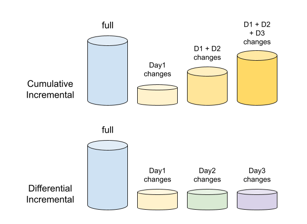

備份與恢復
備份與還原
備份是任何資料庫設定中非常關鍵的部分。它們通常是資料的複製品，可用於在資料庫發生重大或小型危機時重建資料。一般而言，備份可分為兩種：
- 實體備份 - 磁碟上的資料目錄原樣備份
- 邏輯備份 - 表結構及其內的紀錄
上述兩種備份類型均由 MySQL 使用不同工具支援。由 SRE 判斷何時使用何種備份工具。
Mysqldump
此工具隨 MySQL 安裝提供，協助取得資料庫的邏輯備份。它輸出一組 SQL 語句來重建資料。不建議對大型表使用 mysqldump，因耗時且檔案體積龐大；對於小型表則為最佳且最快的選擇。
mysqldump [options] > dump_output.sql
以下為使用 mysqldump 可搭配的選項以取得合適的資料庫備份。
備份所有資料庫：
mysqldump -u<user> -p<pwd> --all-databases > all_dbs.sql
備份特定資料庫：
mysqldump -u<user> -p<pwd> --databases db1 db2 db3 > dbs.sql
備份單一資料庫：
mysqldump -u<user> -p<pwd> --databases db1 > db1.sql
或
mysqldump -u<user> -p<pwd> db1 > db1.sql
上述兩者的差別是後者備份輸出中不包含 CREATE DATABASE 指令。
備份資料庫中特定表：
mysqldump -u<user> -p<pwd> db1 table1 table2 > db1_tables.sql
只備份表結構（不含資料）：
mysqldump -u<user> -p<pwd> --no-data db1 > db1_structure.sql
只備份表資料（不含 CREATE 指令）：
mysqldump -u<user> -p<pwd> --no-create-info db1 > db1_data.sql
備份表中特定紀錄：
mysqldump -u<user> -p<pwd> --no-create-info db1 table1 --where=”salary>80000” > db1_table1_80000.sql
mysqldump 也可以輸出為 CSV、其他分隔文字或 XML 格式以支援特定需求。mysqldump 的備份為離線備份，即備份完成時不包含備份期間資料庫的變更。例如，若備份於下午3點開始，4點完成，則不包含下午3點至4點間的資料變更。
從 mysqldump 還原 有以下兩種方式：
從 shell 還原
mysql -u<user> -p<pwd> < all_dbs.sql
或
若資料庫已建，從 shell 還原：
mysql -u<user> -p<pwd> db1 < db1.sql
MySQL 交談介面中還原：
mysql> source all_dbs.sql
Percona XtraBackup
此工具需與 MySQL 伺服器獨立安裝，為 Percona 提供的開源工具。可用於取得完整或部分的物理備份。提供線上備份，即備份進行時的資料變動也會包含在備份中，如前文所示。
- 完整備份 - 資料庫完整備份
- 部分備份 - 增量備份
- 累積式 - 完整備份後，接續備份包含從完整備份後至今所有變更。例如，週日做完整備份，從週一起的每次備份都包含從週日以後的變更；週二的備份包含週一的變更，週三備份包含週一和週二的變更，以此類推。
- 差異式 - 完整備份後，下一次備份包含自上次增量備份後的變更。例如，週日完成完整備份，週一備份含週日後變更，週二備份含週一後變更，依此類推。

Percona XtraBackup 可依需求取得完整或增量備份。增量備份比完整備份（每日計）佔用空間小，但還原時間較長。
建立完整備份
xtrabackup --defaults-file=<my.cnf路徑> --user=<mysql用戶> --password=<mysql密碼> --backup --target-dir=<目標目錄路徑>
範例：
xtrabackup --defaults-file=/etc/my.cnf --user=some_user --password=XXXX --backup --target-dir=/mnt/data/backup/
其他選項
--stream- 用於以指定格式串流輸出備份檔案。目前僅支援xbstream。--tmp-dir- 指定暫存備份檔用的臨時目錄。--parallel- 設定可用於並行複製檔案數目。--compress- 預設使用quicklz，啟用此選項則備份會以壓縮格式保存，每個檔案為.qp格式，可用qpress解壓縮。--decompress- 解壓所有.qp壓縮檔，執行後不會刪除原始壓縮檔，若需刪除，搭配--remove-original使用。請注意，解壓縮選項需與用於壓縮的xtrabackup命令分別執行。
備份準備
完成 --backup 後，需準備備份以使資料檔案一致且符合時間點。備份執行時途中可能有交易修改資料檔，準備步驟會將這些交易套用於資料檔。
xtrabackup --prepare --target-dir=<備份目錄>
範例：
xtrabackup --prepare --target-dir=/mnt/data/backup/
不建議中斷備份準備程序，否則可能導致資料檔損壞，備份無法使用而須重做。
還原完整備份
將備份中 target-dir 內所有檔案複製到 MySQL 伺服器的 data-dir，並變更檔案擁有權為 MySQL 用戶（Linux 執行 MySQL 伺服器的用戶），然後啟動 MySQL。
亦可用以下指令：
xtrabackup --defaults-file=/etc/my.cnf --copy-back --target-dir=/mnt/data/backups/
注意 - 還原前備份必須先準備。
建立增量備份
Percona XtraBackup 支援增量備份，即只備份自上次備份後的變更。每個 InnoDB 頁面包含一個日誌序號（LSN），也會在備份和準備命令結尾顯示。
xtrabackup: Transaction log of lsn <LSN> to <LSN> was copied.
或
InnoDB: Shutdown completed; log sequence number <LSN>
<timestamp> completed OK!
上述顯示備份包含至該 LSN，此為增量備份核心資訊。增量備份不比較資料檔變更，而是檢查 InnoDB 頁面 LSN 是否超過上次備份 LSN。唯有完整備份後，增量備份方有意義。
xtrabackup 會產生 xtrabackup_checkpoint 檔案，內含備份 LSN 資訊，格式如下：
backup_type = full-backuped | incremental
from_lsn = 0 (完整備份) | 上次備份的 to_lsn <LSN>
to_lsn = <LSN>
last_lsn = <LSN>
to_lsn 與 last_lsn 不同：若 last_lsn 大於 to_lsn，代表備份時尚有交易尚未套用，此時需執行 --prepare。
建立完整備份：
xtrabackup --defaults-file=/etc/my.cnf --user=some_user --password=XXXX --backup --target-dir=/mnt/data/backup/full/
假設 xtrabackup_checkpoint 內容為：
backup_type = full-backuped
from_lsn = 0
to_lsn = 1000
last_lsn = 1000
有了完整備份，接著建立增量備份（差異式）：
xtrabackup --defaults-file=/etc/my.cnf --user=some_user --password=XXXX --backup --target-dir=/mnt/data/backup/incr1/ --incremental-basedir=/mnt/data/backup/full/
在 incr1 目錄會有 delta 檔案，如 ibdata1.delta、db1/tbl1.ibd.delta，代表從完整備份複製的變更。xtrabackup_checkpoint 更新如下：
backup_type = incremental
from_lsn = 1000
to_lsn = 1500
last_lsn = 1500
from_lsn 與上次備份 to_lsn 相符，將此增量備份作為基底繼續建下一次增量備份：
xtrabackup --defaults-file=/etc/my.cnf --user=some_user --password=XXXX --backup --target-dir=/mnt/data/backup/incr2/ --incremental-basedir=/mnt/data/backup/incr1/
xtrabackup_checkpoint 更新為：
backup_type = incremental
from_lsn = 1500
to_lsn = 2000
last_lsn = 2200
增量備份準備
增量備份準備與完整備份不同。準備程序會執行兩個動作：套用已提交交易至資料檔，並回滾未提交交易。對增量備份，必須跳過回滾未提交交易，因它們可能在下一個增量備份被提交；若先回滾將導致後續增量備份無法套用。
故備份準備時搭配 --apply-log-only 選項跳過回滾階段。
根據前述三個目錄：
/mnt/data/backup/full
/mnt/data/backup/incr1
/mnt/data/backup/incr2
先準備完整備份：
xtrabackup --prepare --apply-log-only --target-dir=/mnt/data/backup/full
輸出尾端會顯示：
InnoDB: Shutdown complete; log sequence number 1000
<timestamp> Completed OK!
該 LSN 與完整備份的 to_lsn 相符。
接著將第一個增量備份套用到完整備份：
xtrabackup --prepare --apply-log-only --target-dir=/mnt/data/backup/full --incremental-dir=/mnt/data/backup/incr1
最後套用第二個增量備份（不使用 --apply-log-only）：
xtrabackup --prepare --target-dir=/mnt/data/backup/full --incremental-dir=/mnt/data/backup/incr1
此步驟會將 incr2 的 delta 檔案套用到完整備份資料中，套用 redo 日誌並回滾未提交交易，完成最終資料狀態。此目錄即為還原用資料。
注意：累積式增量備份，每次 incremental-basedir 都指向完整備份目錄。準備需先以 --apply-log-only 處理完整備份，最後僅對最後一次增量備份做正常 --prepare。
還原增量備份
完成上述步驟後，還原方式同完整備份還原。